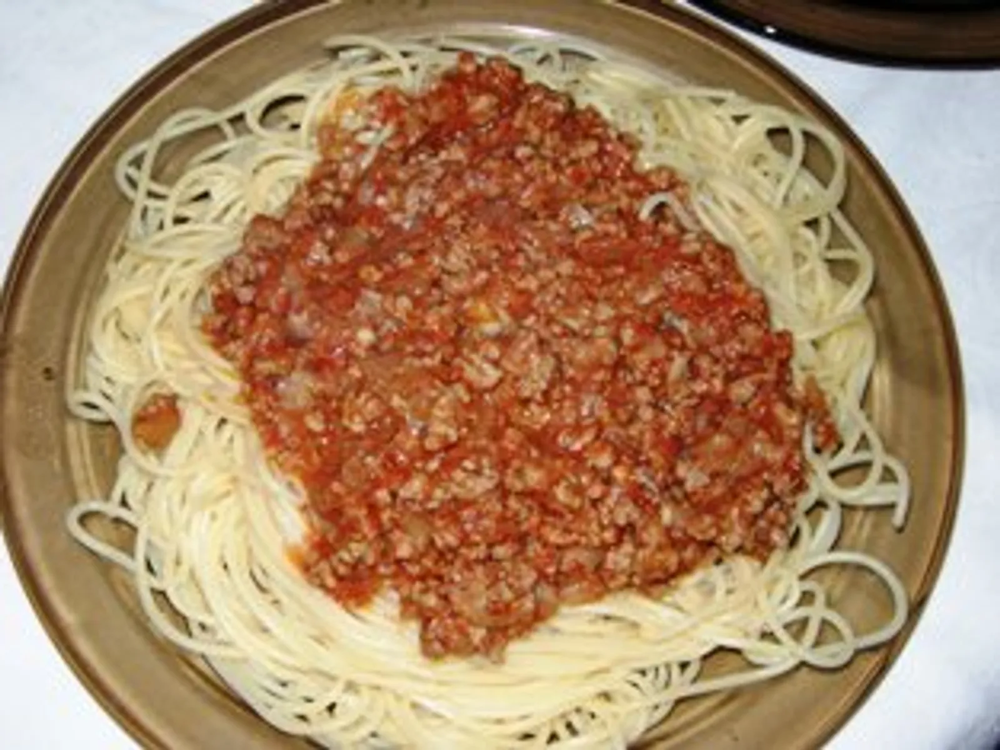

Bolonjeze spageti

Sastojci
- 500 gr. mljevenog mesa (mesanog teleceg/svinskog)
- 4-5 glavice crnog luka
- malo ulja
- malo soli, bibera, origana, lorberovog lista i druge zacie po vas ukus
- 200ml domatnog pirea (ako imate domaci jos bole)
- malo vode
- 1pakovanje tankih spageti (barila no.3)
- malo ribanog kackavalja
Priprema
-
Stavite 2-3 kasike ulja u tiganj i u njemu dodajte naseckani crni luk. Posolite (da luk pusti vodu) i przite, ali pazite da luk ostane beo da ne pocne da se przi. Uz postojano dodavanje po malo vode dinstajte crni luk nekih 20-tak minuta odnosno dok sasvim ne omeksa.
-
Zatim u tako dobro pripremjen luk dodajte mljeveno meso i sve zacine. Kratko proprzite i nalejte vodom otprilike (2 case). Poklopite do pola i ostavite na tihoj vatri da kuva oko sat, sat i po. (ako je potrebno dodajte vodu ali ne previse)
- Na kraju dodajte domatnog pirea, otvorite poklopac i uz cesceg mesanja (da kecap ne zagori) kuvajte dok voda ne ispari, a ostane dovoljno sosa. (jos otprilike 20tak minuta) ovisno tome koliko vam je vode ostalo pre nego sto ste stavili kecap t.e. domatnog pirea.
-
Skuvajte spagete. U vrucu vodu stavite sol i malo ulja, pustite da voda zovri i stavite spagete. Nemojte ih prekuvati obicno ove bariline ne treba kuvati duze od 5 minuta. Kad budu kuvane odmah ih procedite i isperite hladnom vodom.
- Servirajte spagede, prelijte ih sosom i rendanom kackavaljem odozgo.